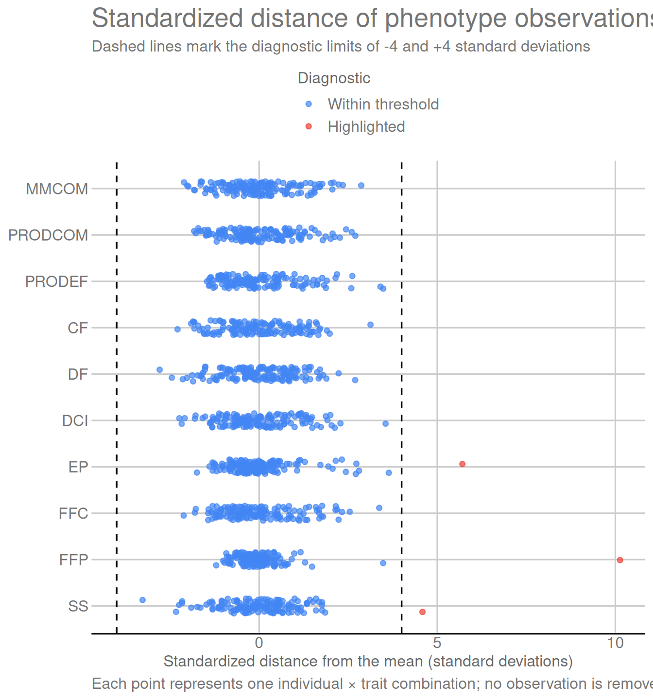

Genomic selection requires phenotypes and markers to represent the
same individuals in the same order. In this module, both data sources
are read, identifiers are organized, SSR missing-value codes are
converted to NA, phenotypes are aligned with genotypes, and
SSR loci are subjected to quality control.
The block column (BL) is removed because it is not part
of the statistical model adopted in this analysis. Family
(FAM) is preserved because it will be used both in the
fixed-effect matrix and to stratify the cross-validation folds in Module
02. No individual is removed in this module.
Preprocessing produces three central objects for the following
stages: the aligned phenotype matrix, the SSR matrix after locus quality
control, and metadata containing individual and family. The diagnostics
verify the consistency of these objects before genomic-matrix
construction.
2. Packages used
The packages used in this module have distinct roles:
readxl: reads the Excel workbooks containing genotype
and phenotype data;
dplyr: selects, transforms, and organizes tabular
data;
tidyr: reshapes data between wide and long
formats;
ggplot2: builds the quality-control and
phenotype-distribution figures;
ggthemes: applies the GDocs theme and color scales used
in the figures;
knitr: formats tables in R Markdown documents;
here: builds project-relative file paths that do not
depend on the local working directory.
library(readxl) # Read Excel workbooks.
library(dplyr) # Manipulate and transform tables.
library(tidyr) # Reshape data between wide and long formats.
library(ggplot2) # Build figures.
library(ggthemes) # Apply the GDocs theme and color scales.
library(knitr) # Format tables and R Markdown output.
library(here) # Build portable project-relative paths.
3. Reading the original spreadsheets
3.1 Genotype data
Genotype information is concentrated in two sheets of the genotype
workbook. The Genes sheet contains the numerical SSR codes:
its first column is an index and the next 35 columns correspond to the
original loci. Because this sheet has no row containing column names, it
is read with col_names = FALSE.
The Genealex sheet provides individual identifiers and
locus names. It is also read without column names because it preserves
metadata rows and the original GenAlEx layout. The positions containing
these identifiers are handled explicitly in the next section.
The initial structure of Genes can be inspected in its
first six rows and six columns:
as.data.frame(genes[1:6, 1:6]) |>
format_table(caption = "Preview of the Genes sheet")
Preview of the Genes sheet
…1
…2
…3
…4
…5
…6
1
12
12
22
12
22
1
22
22
22
12
12
1
12
12
12
11
22
1
22
12
22
22
22
1
12
12
22
12
22
1
12
12
22
11
22
The preview shows the raw genotype layout: the first column is a
sequential index, and the following columns contain the SSR codes
organized in the next section.
3.2 Phenotype data
Phenotype data are stored in the Médias_IND_artigo
sheet, which already contains column names. This source includes
individual identifiers, family membership, and the evaluated traits.
The BL column, corresponding to experimental block, is
retained at this first stage so that pheno_raw faithfully
represents the original spreadsheet. Because BL is not part
of the statistical model used here, it will be left out when the
analytical set of columns is defined in Section 5.
The phenotype table is inspected while it is still in its original
form:
head(pheno_raw) |>
format_table(caption = "Preview of the original phenotype data")
Preview of the original phenotype data
IND
BL
FAM
MMCOM
PRODCOM
PRODEF
CF
DF
DCI
EP
FFC
FFP
SS
1
9
1
1.17127
81.98890
22.77781
23.30
10.000
5.065
2.955
5.65
1.18
14.40
2
8
1
1.06666
119.46592
6.33200
20.52
7.768
4.586
2.332
5.44
1.03
13.26
3
5
1
0.98358
76.71924
15.42794
21.48
8.229
4.782
2.637
3.54
0.90
14.70
4
8
1
1.08053
88.60346
8.94500
21.32
8.394
4.324
2.335
3.61
1.04
14.00
5
2
1
0.95089
53.24984
5.32100
18.40
10.120
4.988
2.588
6.16
1.18
14.30
6
7
1
0.74452
54.34996
2.69800
18.36
9.074
4.461
2.301
5.70
1.29
15.80
The preview shows the phenotype spreadsheet before analytical
variables are selected, including IND, FAM,
BL, and the ten evaluated traits.
3.3 Initial check of the data sources
Before organization and alignment, the dimensions of the three
imported structures are compared. This is a structural check:
Genes contains genotype codes, Genealex
preserves GenAlEx metadata, and pheno_raw preserves the
original phenotype spreadsheet.
data.frame(
Source = c("Genes", "Genealex", "Médias_IND_artigo"),
Rows = c(nrow(genes), nrow(genealex), nrow(pheno_raw)),
Columns = c(ncol(genes), ncol(genealex), ncol(pheno_raw))
) |>
format_table(caption = "Dimensions of the spreadsheets used in the analysis")
Dimensions of the spreadsheets used in the analysis
Source
Rows
Columns
Genes
150
36
Genealex
153
72
Médias_IND_artigo
150
13
The table confirms 150 individuals in Genes and 35
columns corresponding to SSR loci, in addition to the first index
column. The phenotype table contains 150 individuals.
Genealex has its own metadata layout, so its dimensions
should not be interpreted as a marker matrix.
4. Organizing the SSR data
4.1 Individual and locus identifiers
The first column of Genes contains a sequential
population-group index and does not represent the phenotype variable
FAM. The remaining 35 columns correspond to the original
SSR loci.
In Genealex, individual identifiers begin on the fourth
row of the second column, after the three metadata rows. Locus names
begin in the third column and occur every two columns. The numbers of
individuals and loci to recover are obtained directly from the
dimensions of the Genes sheet.
Before building the SSR matrix, the identifiers recovered from the
GenAlEx structure are checked. Keeping this diagnostic next to the step
that creates ids and locus_names makes any
inconsistency easier to interpret.
ssr_identifier_checks <- data.frame(
Check = c(
"Missing genotype identifiers",
"Duplicated genotype identifiers",
"Missing locus names",
"Duplicated locus names"
),
Value = c(
sum(is.na(ids) | ids == ""),
sum(duplicated(ids)),
sum(is.na(locus_names) | locus_names == ""),
sum(duplicated(locus_names))
)
)
format_table(
ssr_identifier_checks,
caption = "Check of genotype identifiers and locus names"
)
Check of genotype identifiers and locus names
Check
Value
Missing genotype identifiers
0
Duplicated genotype identifiers
0
Missing locus names
0
Duplicated locus names
0
The checks contain 0 problematic occurrences, confirming that
individual identifiers and locus names can be used to construct the SSR
matrix.
4.2 Building the SSR matrix
After identifiers are recovered, the first column of
Genes is removed and the 35 marker columns form
ssr_raw. Codes are stored numerically, and -9,
used in the original file for missing calls, is converted to
NA.
Thus, ssr_raw preserves the original genotypes while
representing individuals in rows, loci in columns, and missing calls
explicitly.
ssr_raw <- as.matrix(
genes[, -1, drop = FALSE]
)
storage.mode(ssr_raw) <- "numeric"
ssr_raw[ssr_raw == -9] <- NA_real_
rownames(ssr_raw) <- ids
colnames(ssr_raw) <- locus_names
as.data.frame(ssr_raw[1:6, 1:8]) |>
format_table(caption = "Preview of the organized SSR matrix")
Preview of the organized SSR matrix
P3K4813A0
CPM1598CC
CPM1814A5
P3K1433CC
P3K5593C0
CPM746LCC
P6K128CC
P3K3256CC
12
12
22
12
22
11
11
33
22
22
22
12
12
12
12
33
12
12
12
11
22
12
12
33
22
12
22
22
22
12
11
33
12
12
22
12
22
11
11
33
12
12
22
11
22
11
11
33
4.3 Interpreting SSR codes
SSR codes represent the two alleles observed in each individual. For
example, 12 denotes one copy of allele 1 and one copy of
allele 2, 22 denotes two copies of allele 2, and
33 denotes two copies of allele 3.
The 33 value observed for P3K3256CC is not
an error or a special category: this locus is multi-allelic and allele 3
is represented in the panel. In Module 02, these genotype codes are
decomposed into dosages of 0, 1, or 2 copies for each observed
allele.
5. Organizing and aligning phenotypes
This stage transforms the raw phenotype table into objects aligned
with the SSR matrix. The process is presented in four parts: trait
definition, individual checking and correspondence, effective alignment,
and separation of metadata from numerical phenotypes.
5.1 Traits used in the analysis
Ten phenotype traits are used, identified by the same codes
throughout all modules.
# Define the traits used in the analysis.
TRAITS <- c(
"MMCOM", "PRODCOM", "PRODEF", "CF", "DF",
"DCI", "EP", "FFC", "FFP", "SS"
)
The dictionary links the codes used in the R objects to biological
descriptions and measurement units. This is important because the ten
traits are on different scales and the same codes are used throughout
the modeling and results modules.
# Associate each trait with its English and Portuguese descriptions and measurement unit.
trait_dictionary <- data.frame(
Trait = TRAITS,
Description_en = c(
"Mean mass of commercial fruit",
"Production of commercial fruit",
"Production of defective fruit",
"Fruit length",
"Fruit diameter",
"Internal-cavity diameter",
"Mean pulp thickness",
"External fruit firmness",
"Internal pulp firmness",
"Soluble solids"
),
Description_pt = c(
"Massa média de frutos comerciais",
"Produção de frutos comerciais",
"Produção de frutos defeituosos",
"Comprimento do fruto",
"Diâmetro do fruto",
"Diâmetro da cavidade interna",
"Espessura média da polpa",
"Firmeza externa do fruto",
"Firmeza interna da polpa",
"Sólidos solúveis"
),
Unit = c(
"kg", "kg", "kg", "cm", "cm",
"cm", "cm", "N", "N", "°Brix"
)
)
rownames(trait_dictionary) <- NULL
format_table(
trait_dictionary[, c("Trait", "Description_en", "Unit")],
caption = "Dictionary of phenotype traits",
col.names = c("Trait", "Description", "Unit")
)
Dictionary of phenotype traits
Trait
Description
Unit
MMCOM
Mean mass of commercial fruit
kg
PRODCOM
Production of commercial fruit
kg
PRODEF
Production of defective fruit
kg
CF
Fruit length
cm
DF
Fruit diameter
cm
DCI
Internal-cavity diameter
cm
EP
Mean pulp thickness
cm
FFC
External fruit firmness
N
FFP
Internal pulp firmness
N
SS
Soluble solids
°Brix
The dictionary shows that production and mass are expressed in kg,
fruit dimensions in cm, firmness in N, and soluble solids in °Brix.
These different units explain why the numerical scales of the traits
should not be compared directly.
5.2 Analytical columns and correspondence between individuals
Before any rows are reordered, the columns that form the analytical
table are defined. BL is excluded because it is not part of
the statistical model. Phenotype identifiers are then checked and the
sets of plants represented by both sources are compared.
# Define the analytical columns; BL is excluded because it is not part of the model.
required_columns <- c("IND", "FAM", TRAITS)
# Standardize phenotype identifiers before comparing them with genotype identifiers.
pheno_raw$IND <- trimws(as.character(pheno_raw$IND))
phenotype_checks <- data.frame(
Check = c(
"Missing phenotype identifiers",
"Duplicated phenotype identifiers",
"Missing required phenotype columns"
),
Value = c(
sum(is.na(pheno_raw$IND) | pheno_raw$IND == ""),
sum(duplicated(pheno_raw$IND)),
length(setdiff(required_columns, names(pheno_raw)))
)
)
format_table(
phenotype_checks,
caption = "Check of phenotype identifiers and required columns"
)
Check of phenotype identifiers and required columns
Check
Value
Missing phenotype identifiers
0
Duplicated phenotype identifiers
0
Missing required phenotype columns
0
alignment <- data.frame(
Check = c(
"Genotyped individuals",
"Phenotyped individuals",
"Missing from phenotype data",
"Missing from genotype data"
),
Value = c(
length(ids),
nrow(pheno_raw),
length(setdiff(ids, pheno_raw$IND)),
length(setdiff(pheno_raw$IND, ids))
)
)
format_table(
alignment,
caption = "Alignment between genotype and phenotype data"
)
Alignment between genotype and phenotype data
Check
Value
Genotyped individuals
150
Phenotyped individuals
150
Missing from phenotype data
0
Missing from genotype data
0
The phenotype checks contain 0 problematic occurrences. The alignment
table confirms 150 genotyped individuals and 150 phenotyped individuals,
with no plants present in only one source. Alignment can therefore
proceed without discarding individuals.
5.3 Effective phenotype alignment
Only after the previous checks are phenotypes reordered to exactly
follow the individual sequence in the SSR matrix.
# Reorder phenotypes to the same sequence as genotyped individuals.
pheno <- pheno_raw[
match(ids, pheno_raw$IND),
required_columns
]
5.4 Metadata and phenotype matrix
After alignment, metadata retains IND and
FAM, whereas phenotypes contains only the ten
numerical traits. Family therefore remains categorical and is not mixed
with numerical phenotypes.
# Separate metadata; FAM remains categorical and is not mixed with numeric phenotypes.
metadata <- data.frame(
IND = pheno$IND,
FAM = factor(pheno$FAM),
row.names = pheno$IND
)
# Build the numeric phenotype matrix in the same order as genotyped individuals.
phenotypes <- as.matrix(pheno[, TRAITS])
storage.mode(phenotypes) <- "numeric"
rownames(phenotypes) <- pheno$IND
# Distribution of individuals among families.
data.frame(
Family = names(table(metadata$FAM)),
Individuals = as.integer(table(metadata$FAM))
) |>
format_table(caption = "Number of individuals per family")
Number of individuals per family
Family
Individuals
1
15
2
15
3
15
4
15
5
15
6
15
7
15
8
15
9
15
10
15
After reordering, FAM contains 10 families, with family
sizes ranging from 15 to 15 individuals. This distribution is used to
stratify the five cross-validation folds in Module 02.
6. Marker quality control
6.1 Locus-retention criteria
Marker quality control considers two properties of each locus: the
proportion of individuals with an observed genotype and the number of
genotype classes represented. A locus is retained when its call rate is
at least 0.90 — equivalent to 135 of 150 individuals — and at least two
genotype classes are present.
These criteria distinguish missingness from lack of variation. A
locus with high call rate can therefore still be removed if it is
monomorphic in the panel. Filtering acts only on loci:
ssr_raw preserves the original matrix for diagnostics,
whereas ssr contains the loci passed to allele-dosage
coding in Module 02.
# Define the call-rate threshold immediately before applying it in quality control.
CALL_RATE_MIN <- 0.90
# Summarize completeness and genotype diversity for each locus.
locus_audit <- data.frame(
Locus = colnames(ssr_raw),
N_called = colSums(!is.na(ssr_raw)),
Call_rate = colMeans(!is.na(ssr_raw)),
N_genotype_classes = apply(
ssr_raw,
2,
function(genotypes) length(unique(na.omit(genotypes)))
)
)
locus_audit$Keep_locus <-
locus_audit$Call_rate >= CALL_RATE_MIN &
locus_audit$N_genotype_classes >= 2
# Retain in the SSR matrix only loci that pass the quality-control criteria.
ssr <- ssr_raw[, locus_audit$Keep_locus, drop = FALSE]
format_table(
locus_audit,
digits = 3,
caption = "Quality control of SSR loci",
col.names = c("Locus", "Called genotypes", "Call rate", "Genotype classes", "Retain locus")
)
Quality control of SSR loci
Locus
Called genotypes
Call rate
Genotype classes
Retain locus
P3K4813A0
P3K4813A0
137
0.913
3
TRUE
CPM1598CC
CPM1598CC
147
0.980
3
TRUE
CPM1814A5
CPM1814A5
146
0.973
3
TRUE
P3K1433CC
P3K1433CC
138
0.920
3
TRUE
P3K5593C0
P3K5593C0
147
0.980
3
TRUE
CPM746LCC
CPM746LCC
147
0.980
3
TRUE
P6K128CC
P6K128CC
144
0.960
3
TRUE
P3K3256CC
P3K3256CC
149
0.993
5
TRUE
P3K3511CC
P3K3511CC
148
0.987
3
TRUE
ctg64CC
ctg64CC
148
0.987
2
TRUE
P6K900CC
P6K900CC
150
1.000
3
TRUE
P3K7484
P3K7484
135
0.900
2
TRUE
P3K149C0
P3K149C0
149
0.993
5
TRUE
ctg718CC
ctg718CC
139
0.927
3
TRUE
P6K1129CC
P6K1129CC
150
1.000
1
FALSE
P3K6372CC
P3K6372CC
147
0.980
3
TRUE
CPM2197CC
CPM2197CC
147
0.980
3
TRUE
ctg395CC
ctg395CC
150
1.000
2
TRUE
P3K2937CC
P3K2937CC
145
0.967
3
TRUE
CPM1125LCC
CPM1125LCC
150
1.000
3
TRUE
P3K3317CC
P3K3317CC
150
1.000
3
TRUE
P3K2152CC
P3K2152CC
150
1.000
3
TRUE
P6K673C0
P6K673C0
149
0.993
3
TRUE
CPM710CC
CPM710CC
148
0.987
3
TRUE
CPM1747CC
CPM1747CC
150
1.000
3
TRUE
P3K896CC
P3K896CC
150
1.000
3
TRUE
P3K2426CC
P3K2426CC
147
0.980
2
TRUE
P3K3473CC
P3K3473CC
140
0.933
2
TRUE
ctg706CC
ctg706CC
138
0.920
3
TRUE
P3K7483A5
P3K7483A5
141
0.940
3
TRUE
ctg407S0
ctg407S0
150
1.000
3
TRUE
P3K4426C0
P3K4426C0
150
1.000
4
TRUE
P3K178CC
P3K178CC
150
1.000
3
TRUE
P3K6568CC
P3K6568CC
149
0.993
4
TRUE
ctg32A0
ctg32A0
149
0.993
3
TRUE
6.2 Quality-control result
Of the 35 loci evaluated, 34 satisfy both the call-rate and
genotype-variation criteria. The removed locus is P6K1129CC; its
exclusion is due to insufficient genotype variation in the panel rather
than removal of any individual.
6.3 Call-rate visualization
The figure summarizes locus completeness and the final
quality-control decision together. Each bar represents the proportion of
observed genotypes at one locus, and the dashed line marks the minimum
call rate of 0.90. Colors follow the final retention decision: reaching
0.90 is necessary, but each locus must also contain at least two
genotype classes.
ggplot(
locus_audit,
aes(
x = reorder(Locus, Call_rate),
y = Call_rate,
fill = factor(
Keep_locus,
levels = c(TRUE, FALSE),
labels = c("Retained", "Removed")
)
)
) +
geom_col(width = 0.8) +
geom_hline(
yintercept = CALL_RATE_MIN,
linetype = 2,
linewidth = 0.6
) +
coord_flip() +
scale_y_continuous(
limits = c(0, 1),
breaks = seq(0, 1, 0.2),
labels = paste0(seq(0, 100, 20), "%"),
expand = expansion(mult = c(0, 0.02))
) +
scale_fill_gdocs(name = "Decision") +
labs(
x = NULL,
y = "Call rate",
title = "Completeness and retention of SSR loci",
subtitle = "The dashed line marks the 90% minimum call rate; retention also requires at least two genotype classes",
caption = "Color represents the final quality-control decision, not call rate alone."
) +
theme_gdocs() +
theme(
legend.position = "top",
axis.text.y = element_text(size = 8)
)
The figure should be read by combining bar height and color. Height
reports locus completeness, whereas color reports the outcome of the two
criteria applied together. A locus can therefore reach or exceed the 90%
line and still be removed when only one genotype class is represented.
The figure does not indicate removal of individuals; filtering acts only
on loci.
7. Genotype completeness by individual
Genotype completeness is also summarized by individual using the 35
original loci. For each plant, the number and proportion of available
SSR calls are recorded. This information is diagnostic only: no
completeness threshold is used to exclude individuals, and all 150
aligned individuals remain in subsequent stages.
# Compute, across the original loci, the number and proportion of available calls per individual.
individual_audit <- data.frame(
IND = rownames(ssr_raw),
N_called = rowSums(!is.na(ssr_raw)),
Call_rate = rowMeans(!is.na(ssr_raw))
)
rownames(individual_audit) <- NULL
data.frame(
Measure = c("Minimum", "Mean", "Median", "Maximum"),
# List the call-rate values used in the individual summary.
Call_rate = c(
min(individual_audit$Call_rate),
mean(individual_audit$Call_rate),
median(individual_audit$Call_rate),
max(individual_audit$Call_rate)
)
) |>
format_table(
digits = 3,
caption = "Distribution of SSR call rate by individual",
col.names = c("Measure", "Call rate")
)
Distribution of SSR call rate by individual
Measure
Call rate
Minimum
0.914
Mean
0.976
Median
0.971
Maximum
1.000
Individual call rate ranges from 91.4% to 100.0%, with a mean of
97.6%. Because no individual-exclusion rule is applied, these
differences are recorded only as genotype-completeness information.
8. Phenotype characterization
8.1 Descriptive statistics
Descriptive statistics allow direct inspection of the scale,
dispersion, and range of the ten traits before prediction models are
fitted. N also confirms phenotype availability by trait. No
permanent transformation or standardization of phenotypes is performed
at this stage; original values are preserved for the models.
# Directly summarize availability, location, dispersion, and range for each trait.
phenotype_summary <- data.frame(
Trait = colnames(phenotypes),
N = colSums(!is.na(phenotypes)),
Mean = colMeans(phenotypes),
SD = apply(phenotypes, 2, sd),
Minimum = apply(phenotypes, 2, min),
Maximum = apply(phenotypes, 2, max)
)
rownames(phenotype_summary) <- NULL
format_table(
phenotype_summary,
digits = 3,
caption = "Summary of phenotype traits"
)
Summary of phenotype traits
Trait
N
Mean
SD
Minimum
Maximum
MMCOM
150
1.181
0.266
0.620
1.943
PRODCOM
150
63.510
21.518
24.225
121.609
PRODEF
150
6.990
4.637
0.200
23.142
CF
150
23.247
2.665
17.140
31.580
DF
150
10.143
1.108
7.049
13.129
DCI
150
4.825
0.815
2.998
7.719
EP
150
2.887
0.462
2.080
5.523
FFC
150
4.150
1.147
1.720
8.020
FFP
150
1.057
0.561
0.380
6.740
SS
150
13.731
1.171
9.900
19.100
All ten traits contain 150 available observations, confirming that
the analyzed phenotype variables have no missing values. The mean
locates the center of each distribution, the standard deviation
summarizes dispersion, and minimum and maximum delimit the observed
range. Because traits use different units, these measures should be
interpreted within each trait rather than compared directly across
different scales.
8.2 Phenotype observations far from the mean
Standardized values allow the distance of each observation from the
mean of its own trait to be compared independently of the original
measurement unit. For each trait,
\[
z = \frac{y-\bar{y}}{s},
\]
where \(y\) is the observed value,
\(\bar{y}\) is the mean, and \(s\) is the sample standard deviation. The
means and standard deviations already calculated in
phenotype_summary are reused here, avoiding repetition of
the same calculations.
Observations whose absolute standardized distance is at least four
standard deviations are highlighted for inspection. This threshold is
diagnostic only: no observation is removed, capped, or transformed by
this criterion.
# Define the diagnostic threshold immediately before identifying observations distant from the mean.
PHENOTYPE_DISTANCE_THRESHOLD <- 4
# Standardize each trait using the mean and standard deviation summarized in the preceding section.
phenotype_standardized <- scale(
phenotypes,
center = phenotype_summary$Mean,
scale = phenotype_summary$SD
)
# Locate observations whose standardized distance reaches the defined threshold.
extreme_positions <- which(
abs(phenotype_standardized) >= PHENOTYPE_DISTANCE_THRESHOLD,
arr.ind = TRUE
)
phenotype_extremes <- data.frame(
IND = rownames(phenotypes)[extreme_positions[, "row"]],
Trait = colnames(phenotypes)[extreme_positions[, "col"]],
Value = phenotypes[extreme_positions],
Trait_mean = phenotype_summary$Mean[extreme_positions[, "col"]],
Trait_SD = phenotype_summary$SD[extreme_positions[, "col"]],
Standardized_value = phenotype_standardized[extreme_positions],
Absolute_standardized_distance = abs(
phenotype_standardized[extreme_positions]
)
)
# Sort only the diagnostic table; the `phenotypes` matrix remains unchanged.
phenotype_extremes <- phenotype_extremes[
order(-phenotype_extremes$Absolute_standardized_distance),
]
rownames(phenotype_extremes) <- NULL
format_table(
phenotype_extremes,
digits = 3,
col.names = c(
"Individual",
"Trait",
"Value",
"Trait mean",
"Trait SD",
"Standardized value",
"Absolute standardized distance"
),
caption = paste0(
"Phenotype observations at least ",
PHENOTYPE_DISTANCE_THRESHOLD,
" standard deviations from the mean"
)
)
Phenotype observations at least 4 standard deviations from the mean
Individual
Trait
Value
Trait mean
Trait SD
Standardized value
Absolute standardized distance
97
FFP
6.740
1.057
0.561
10.133
10.133
89
EP
5.523
2.887
0.462
5.707
5.707
20
SS
19.100
13.731
1.171
4.586
4.586
3 observations are highlighted at a standardized distance of at least
4 standard deviations. The table identifies the individual, trait,
original value, and distance in standard-deviation units, allowing each
case to be inspected without changing the data used later.
The following figure shows the same diagnostic for all 1,500
individual × trait combinations. Values near zero lie close to the mean
of their respective trait; negative and positive values indicate
observations below or above that mean. Because the axis is expressed in
standard-deviation units, all ten traits can be compared on the same
diagnostic scale.
data.frame(
IND = rownames(phenotypes),
as.data.frame(phenotype_standardized, check.names = FALSE),
check.names = FALSE
) |>
pivot_longer(
cols = -IND,
names_to = "Trait",
values_to = "Standardized_value"
) |>
mutate(
Trait = factor(Trait, levels = rev(TRAITS)),
Diagnostic = factor(
abs(Standardized_value) >= PHENOTYPE_DISTANCE_THRESHOLD,
levels = c(FALSE, TRUE),
labels = c("Within threshold", "Highlighted")
)
) |>
ggplot(
aes(
x = Standardized_value,
y = Trait,
colour = Diagnostic
)
) +
geom_vline(
xintercept = c(
-PHENOTYPE_DISTANCE_THRESHOLD,
PHENOTYPE_DISTANCE_THRESHOLD
),
linetype = 2,
linewidth = 0.6
) +
geom_point(
position = position_jitter(
width = 0,
height = 0.16,
seed = 2026
),
alpha = 0.7,
size = 1.6
) +
scale_color_gdocs(
name = "Diagnostic",
drop = FALSE
) +
labs(
x = "Standardized distance from the mean (standard deviations)",
y = NULL,
title = "Standardized distance of phenotype observations",
subtitle = "Dashed lines mark the diagnostic limits of -4 and +4 standard deviations",
caption = "Each point represents one individual × trait combination; no observation is removed by this diagnostic."
) +
theme_gdocs() +
theme(legend.position = "top")

Most observations should concentrate around zero, whereas highlighted
points occur farther from their respective trait means. The lines at -4
and +4 make the criterion used in the preceding table visually explicit.
The plot is intended to locate unusual observations on a standardized
scale; it is not a normality test and does not define automatic
exclusions.
8.3 Phenotype distributions
The histograms complement the preceding table by showing distribution
shape. Each panel represents one trait and identifies its measurement
unit. Twenty bins are used to keep the same visual resolution across
panels. Because units and ranges differ, only the horizontal axis varies
freely; the vertical count scale remains common to all ten traits. The
dashed line marks the mean reported in
phenotype_summary.
phenotype_long <- data.frame(
IND = rownames(phenotypes),
phenotypes,
check.names = FALSE
) |>
pivot_longer(
cols = -IND,
names_to = "Trait",
values_to = "Value"
) |>
mutate(Trait = factor(Trait, levels = TRAITS))
ggplot(
phenotype_long,
aes(x = Value, fill = Trait)
) +
geom_histogram(
bins = 20,
colour = "white",
linewidth = 0.25
) +
geom_vline(
data = phenotype_summary,
aes(xintercept = Mean),
inherit.aes = FALSE,
linetype = 2,
linewidth = 0.6
) +
facet_wrap(
~ Trait,
scales = "free_x",
ncol = 2,
labeller = as_labeller(
setNames(
paste0(trait_dictionary$Trait, " (", trait_dictionary$Unit, ")"),
trait_dictionary$Trait
)
)
) +
scale_fill_gdocs(guide = "none") +
labs(
x = "Observed value",
y = "Number of individuals",
title = "Phenotype distributions of the ten traits",
subtitle = "Each panel has its own horizontal scale; the dashed line marks the trait mean",
caption = "Histograms are descriptive diagnostics and are not tests of normality."
) +
theme_gdocs() +
theme(
strip.text = element_text(face = "bold"),
axis.text = element_text(size = 9)
)
Interpretation should be made within each panel. The width occupied
by values shows observed dispersion, bar concentration indicates where
most individuals lie, and the position of the mean relative to the main
mass of the distribution helps visualize asymmetry. Because the vertical
axis is common, differences in count concentration can also be compared
across traits. These shapes are descriptive only: asymmetry or longer
tails do not by themselves imply phenotype transformation or removal of
observations.
9. Saving preprocessing results
At the end of the module, analytical objects are collected in a
single RDS file and the main diagnostics are exported separately as CSV
files. preprocessing_object.rds is the primary interface
with Module 02; the CSV files provide direct access to the checks
performed during preprocessing.
9.1 Main preprocessing object
The output directory is created only now, when results are actually
written. Within preprocessing_object, components follow the
sequence developed throughout the module: identification and aligned
phenotypes, SSR matrices, diagnostics, the trait dictionary, and finally
the parameters documenting preprocessing decisions.
dir.create(
here("output", "preprocessing"),
recursive = TRUE,
showWarnings = FALSE
)
preprocessing_object <- list(
# Identification, metadata, and aligned phenotypes.
ids = ids,
metadata = metadata,
phenotypes = phenotypes,
# SSR matrices before and after locus quality control.
ssr_raw = ssr_raw,
ssr = ssr,
# Diagnostics produced throughout the module.
locus_audit = locus_audit,
individual_audit = individual_audit,
phenotype_summary = phenotype_summary,
phenotype_extremes = phenotype_extremes,
# Trait reference and parameters required to reproduce this stage.
trait_dictionary = trait_dictionary,
settings = list(
call_rate_min = CALL_RATE_MIN,
phenotype_distance_threshold = PHENOTYPE_DISTANCE_THRESHOLD,
fixed_effects = "FAM"
)
)
saveRDS(
preprocessing_object,
here("output", "preprocessing", "preprocessing_object.rds")
)
The RDS preserves together the objects reused in Module 02.
settings remains at the end because it records
preprocessing decisions; it documents how the objects were produced but
does not represent an additional analytical table.
9.2 Tabular diagnostics
The checks most useful for independent inspection are also written as
CSV files. Each command explicitly shows the exported object and its
destination. These files do not replace the RDS as input to the next
module; they make diagnostics accessible without requiring the complete
object to be opened.
Thus, alignment_summary.csv documents individual
correspondence, locus_audit.csv and
individual_audit.csv record genotype completeness,
phenotype_summary.csv and
phenotype_extreme_values.csv summarize phenotype
diagnostics, and trait_dictionary.csv preserves the
description and unit of the ten traits.
9.3 Final inventory
Before proceeding to Module 02, the final inventory collects the
dimensions and counts summarizing preprocessing: number of individuals
and traits, number of loci before and after quality control, number of
families, missing SSR calls, and phenotype observations highlighted only
for inspection.
data.frame(
Item = c(
"Individuals",
"Phenotype traits",
"Original SSR loci",
"Retained SSR loci",
"Families",
"Missing SSR calls",
"Highlighted phenotype observations"
),
Value = c(
length(ids),
ncol(phenotypes),
ncol(ssr_raw),
ncol(ssr),
nlevels(metadata$FAM),
sum(is.na(ssr_raw)),
nrow(phenotype_extremes)
)
) |>
format_table(caption = "Final preprocessing summary")
Final preprocessing summary
Item
Value
Individuals
150
Phenotype traits
10
Original SSR loci
35
Retained SSR loci
34
Families
10
Missing SSR calls
126
Highlighted phenotype observations
3
The summary confirms the conditions required for genomic-matrix
construction: all 150 individuals remain aligned with phenotypes,
quality control acts on SSR loci rather than individuals, and
highlighted phenotype observations remain in the data because their
identification is diagnostic only.
10. Next step
Module 02 converts the retained SSR loci into allele-dosage columns,
constructs the marker and genomic relationship matrices, creates the
family fixed-effect matrix, and defines the five cross-validation
folds.